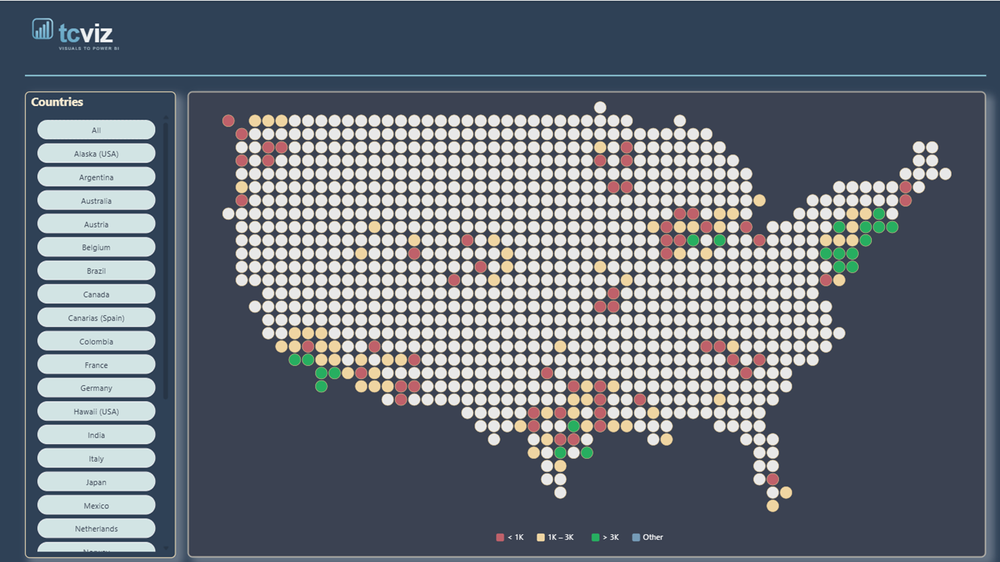

Field wells
- Latitude · Longitude — decimal degrees
- Value — colours the tile
- Size (Pro) — sizes it
- Label · Tooltips · Category — names, hover fields, groups
Free vs Pro
| Free | Pro | |
|---|---|---|
| 27 built-in maps | ✓ | ✓ |
| Rows used | first 500 | up to 30,000 |
| Tile shape | square | + circle, hexagon |
| Latitude distortion correction | ✓ | ✓ |
| 3 colour rules + legend | ✓ | ✓ |
| Aggregation, labels, tooltips | ✓ | ✓ |
| Keyboard, high contrast | ✓ | ✓ |
| Sequential colours | fixed blue | your colours |
| Quantile · diverging · categorical | — | ✓ |
| Size role | — | ✓ |
| Custom TopoJSON regions | — | ✓ |
Key features
- Shapes — square, circle or hexagon; Size by a second measure
- Scales — quantile, diverging at zero, categorical with legend
- Colour rules — legend lists each rule with its condition
- Latitude correction — northern countries not stretched
- Honest counts — rows outside the map or over the limit shown on screen
- Accessible — keyboard navigation, high contrast; no network